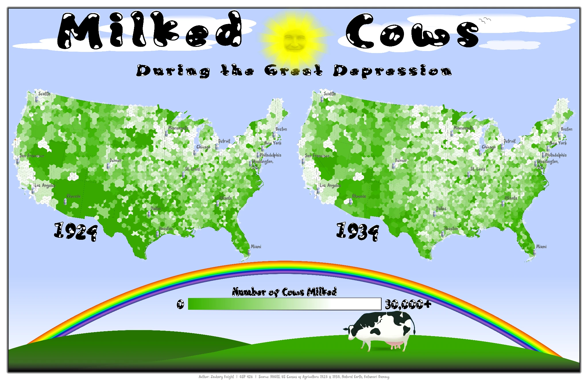

Educational cartography
Milked Cows During the Great Depression
A playful historical data map created for children · United States, 1924 and 1934

About this map
Designed as an educational map for children, this intentionally playful layout compares the number of cows milked across the United States in 1924 and 1934. The cartoon lettering, smiling sun, rainbow, and cow illustration make the subject more approachable, while the paired maps present a historical comparison.